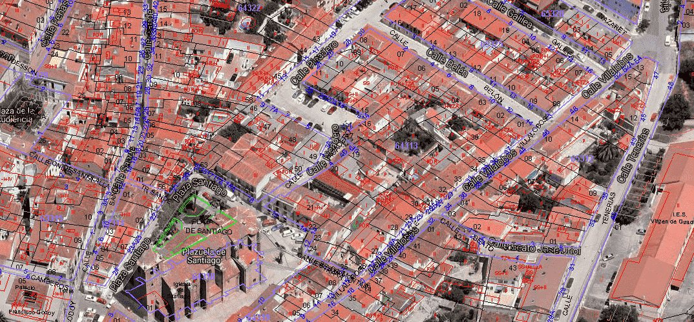
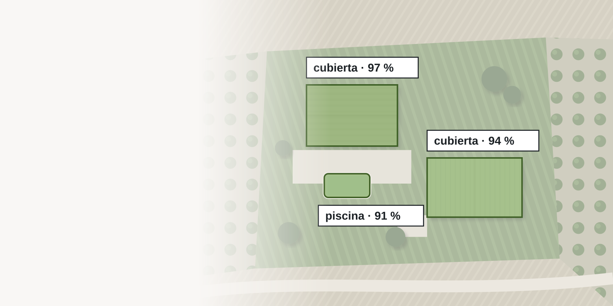
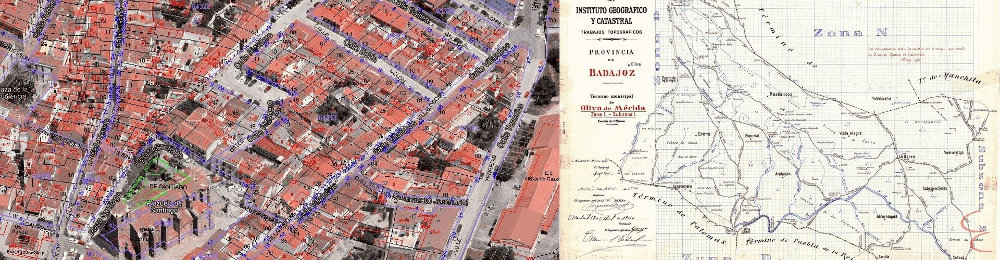
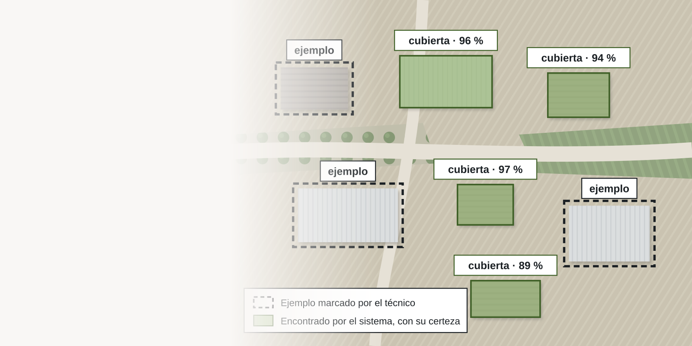
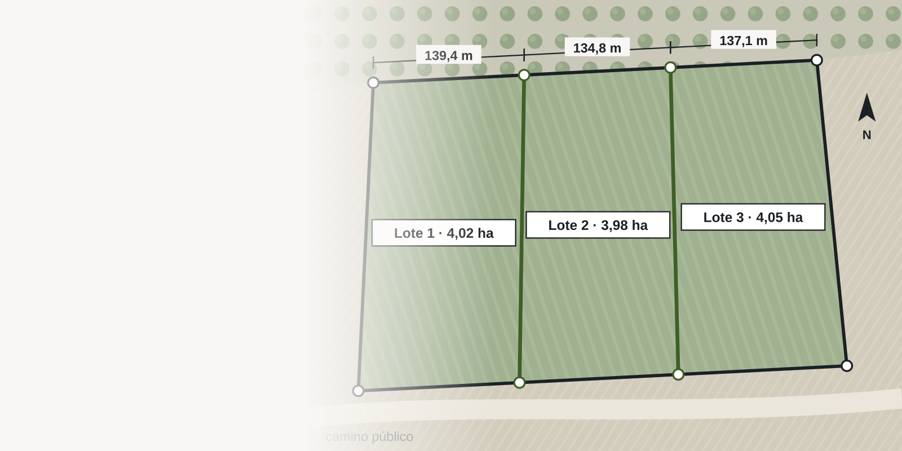
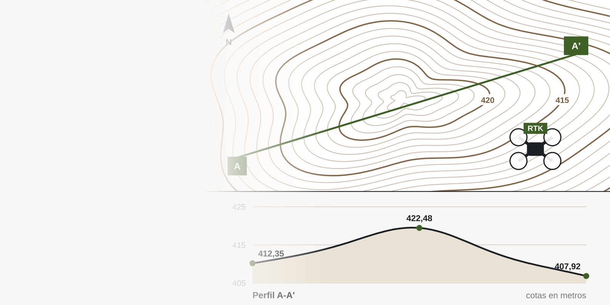
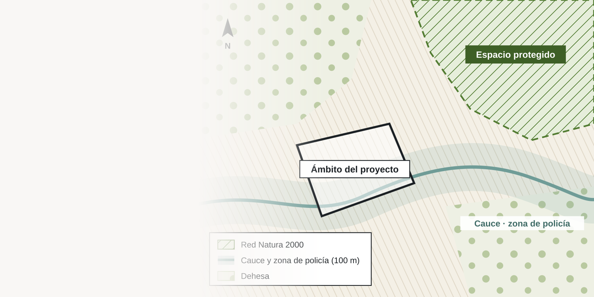
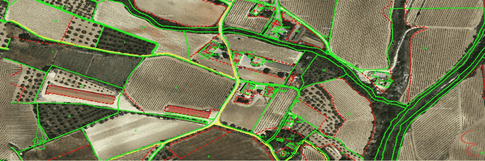

-

El Catastro de su municipio, al día.
Actualización catastral, teledetección y gestión tributaria, municipio a municipio. Desde Badajoz, para cualquier municipio.
-

Lo que el Catastro no ve, localizado con IA.
Nuestra teledetección compara la imagen aérea con el Catastro, parcela a parcela. Un técnico revisa cada alerta.
-

Gabinete catastral.
GML, correcciones, declaraciones, valor de referencia y coordinación con el Registro: su finca, bien en el Catastro.
-

Teledetección con IA, a medida.
Nuestro propio software aprende con ejemplos de su territorio y busca en la imagen aérea lo que usted necesite encontrar.
-

Segregaciones, divisiones y particiones.
Plano acotado, unidad mínima de cultivo, GML y validación gráfica: cada finca nueva, bien hecha desde el principio.
-

Mediciones con dron RTK.
DJI Mavic 3 con RTK: ortofotos, modelos del terreno, curvado de nivel y nivelaciones con precisión centimétrica.
-

Estudios de impacto ambiental.
Documento ambiental, estudio de impacto y cartografía de afecciones para que su proyecto supere el trámite.
-

Valoraciones y peritajes.
Tasaciones, herencias y dictámenes periciales que se pueden seguir paso a paso, y defender.
Teledetección: así encontramos lo que falta en el Catastro.
Seis parcelas vistas por capas. La imagen aérea, el parcelario, lo que consta y lo que detecta la IA: donde no coinciden, hay una alerta. Pulse la leyenda.
- A1Parcela 412 · nave sin registrar
- A2Parcela 414 · piscina sin registrar
- A3Parcela 415 · ampliación de la vivienda
- D1Parcela 416 · descartada: suelo con escombro
Todo lo que hacemos.
Catastro
Lo que hacemos desde 1987: el Catastro de los municipios y los problemas catastrales de cada finca.
Proyectos
Trabajos que salen del mismo oficio: el territorio medido, valorado y cartografiado.
- Teledetección con IA a medidaEntrenamos el sistema para encontrar lo que usted necesite.
- Segregaciones y particionesSegregar, dividir, agrupar o repartir una finca.
- Mediciones con dronOrtofotos, modelos del terreno, curvado de nivel y nivelaciones.
- Medio ambienteEstudios de impacto ambiental y cartografía de afecciones.
- Valoraciones y peritajesTasaciones, herencias y dictámenes periciales.
- Digitalización y datosPlanos, archivos y tomas de datos.
Así es un encargo con nosotros.
- Nos cuenta el casoPor teléfono o correo, con la referencia catastral o el municipio.
- Lo estudiamosLe decimos si tiene arreglo, en qué plazo y cuánto cuesta.
- Lo resolvemosEn campo y en gabinete, con el mismo técnico.
- Se lo entregamosDocumentado y revisado, listo para presentar.
Cuéntenos qué necesita.
Le atiende un técnico, no una centralita. Si no es un trabajo que podamos hacer bien, se lo decimos en la primera llamada.
- emiliocontadorbrito@gmail.com
- Calle Matilde Tagle Ortiz, 28, 5.º D, 06006 Badajoz